SAiデジタルメイキング！（ログレス）3
3.目、服
目次
・ラフ、下書き
・肌、髪
・目、服←今ここ
・もふもふ系
・他モンスター、背景
目と服の工程に入ります。服は未だに苦手なのです。。。
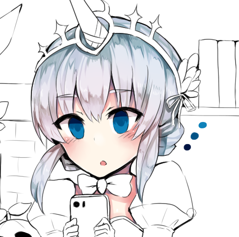
新しいレイヤーを作り、目を塗っていきます※。
画像のような感じで、鉛筆で簡単に色を置きます。
一番濃い色は、白目の影の位置に合わせるように塗ります。
※使用色（薄い方から順番に）
1(R14,G130,B180)
2(R0,G83,B135)
3(R0,G20,B66)
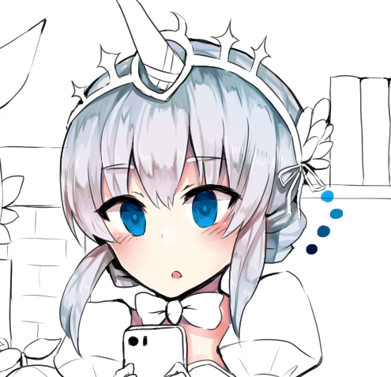
目の上部（若干）、真ん中、下部に薄い水色(R13,G164,B236)で光を入れます。
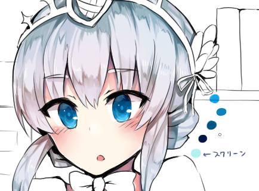
目レイヤーの上にスクリーンレイヤー※を作ります。
スクリーンレイヤーに薄い水色(R178,G240,B240)でふんわり色を重ねると、目の中の光が自然に入ります。
ここで目のレイヤーを１つに結合しました。
また、線画の上にレイヤーを作り、白色の鉛筆で目の中にハイライトを描いています。
※色を明るくさせる加工には、オーバーレイとスクリーンをよく使います。
使い分けとしては、比較的明るい色に他の色を足す場合はオーバーレイ、比較的暗い色に他の色を足す場合はスクリーンを使う、といった感じです。
ここでは実際に、髪色にはオーバーレイで色を重ね、目の色にはスクリーンで色を重ねています。
色ののせ方にもそれぞれ好みがありますので、数通りの加工を見てから色を確定させることをオススメします。
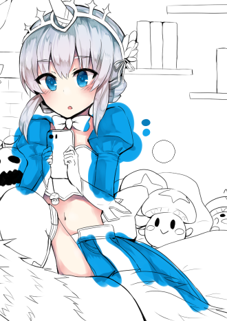
色を塗る工程のパターンはだいたい同じなので、徐々に説明を省略しながら服を描いていきますね。
新しく服のレイヤーを作り、そこにベース色(R13,G164,B236)を一色で塗り、上にレイヤーを作り影(R7,G124,B187)を塗って削ったものがこちらになります（早）
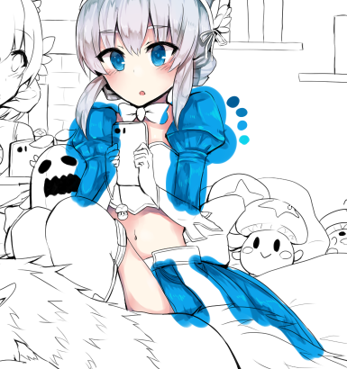
さらに濃い色(R0,G91,B150)、さらに薄い色(R14,G212,B237)で画像のように塗り、服にメリハリをつけます。
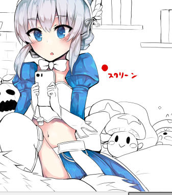
はみ出した部分を消しました。
さらに、服レイヤーの上にスクリーンレイヤーを作り、赤色(R222,G0,B0)でふんわり重ね、落ち着いた色にさせました。
なんとなく寒色に暖色を重ねたら（暖色に寒色を重ねたら）色が落ち着く気がします。なんとなくね。
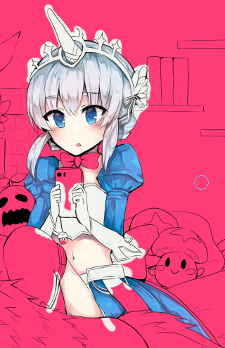
その他アクセサリーを塗っていきます。
アクセサリーの色が白に近い色をしていたので、敢えてピンクで塗りつぶしたレイヤーを作り、色の境目をはっきりさせてからベース色を置いていきます。
この後、ピンクで塗りつぶしたレイヤーを消去する前に、はみ出した部分を消しゴムで削っています。
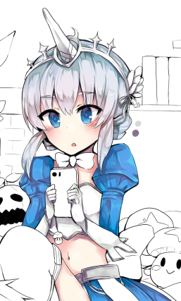
画像のように薄めの影(R216,G215,B216)と濃い目の影(R133,G113,B142)を置き、削ります。
硬い質感を出したいときは、いつもより影を濃いめに置いてあげるといいんじゃないかな（？？）。
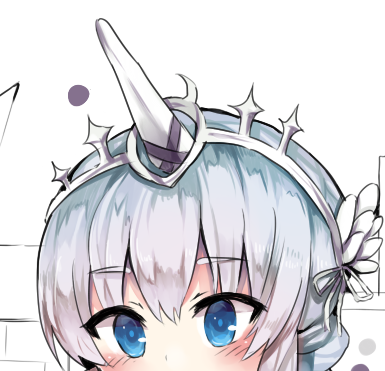
１つ上に乗算レイヤーを作り、上の工程と同じ濃い目の影の色で、ツノの十字になっている部分を鉛筆で塗りつぶします。
乗算レイヤーで塗ると、上の工程でつけた薄い影が潰れることなく色が重ねられて、自然に塗りつぶすことができます。
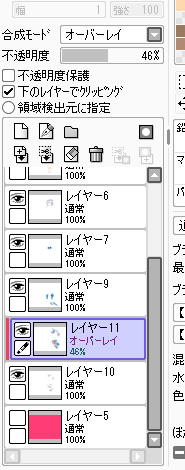
アクセサリーその他のレイヤーを１つに結合し、その上にオーバーレイのレイヤーを作成します。クリッピング忘れずに。
アクセサリーのレイヤーは10で、オーバーレイが11ですね。
オーバーレイで色にメリハリをつけていきますよ～。
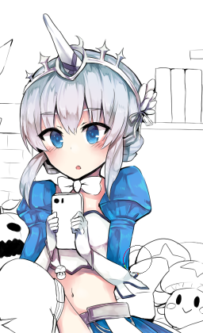
髪にもオーバーレイでそうしたのと同様に、アクセサリーにも赤色と水色を使ってふんわり塗りました。
これも肌の近いところに赤色、空気に近いところに水色というイメージです。
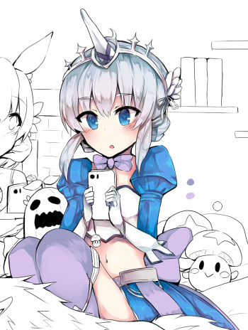
紫色(R213,G193,B234)で首リボン、背リボン、ニーハイを塗ります。
影(R157.G157,B197)もつけて削ります。
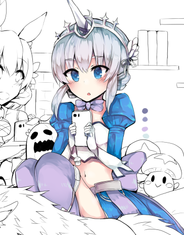
分かりにくいですが、明るめの色を二つふんわり重ねました。
使用色(R214,G194,B234),(R214,G232,B234)
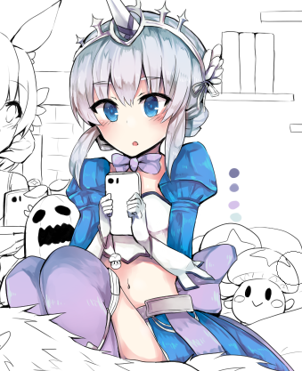
上にオーバーレイのレイヤーを作り、例のごとく、水彩筆の赤色と水色でふんわりと色をのせていきます。
この場合、ニーハイあたりの上部には水色を、下部には赤色を置いたのが分かると思います。
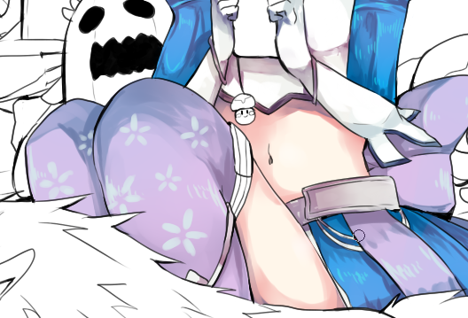
２つ上の工程で使用した明るい色を使って、筆で模様を入れます。
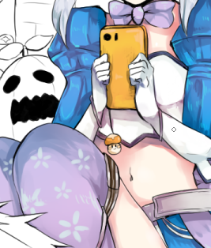
残りはスマホ等のアクセサリーです。
が、この辺から細かいレイヤー分けをするのが面倒くさくなって、１つのレイヤーで色付けや影付けなど全て済ませています。
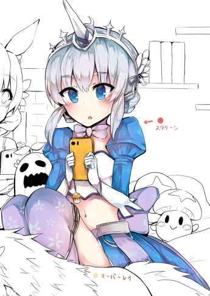
線画以外の色塗りレイヤーを全て結合し、色塗りレイヤーの上にスクリーンレイヤーを作り、水彩筆の薄赤色(R226,G102,B102)でところどころ色彩を調整します。
特にニーハイなんかは結構色を変えちゃっているのが分かると思います。
肌の透明感が強調されますね。
満足するまでこの色で加工をかけたら、再度色塗りレイヤーとスクリーンレイヤーを結合してしまいます。（単にレイヤー数がすっきりするだけ）
ルルハちゃんはこれで完成です！
続きは別のキャラに移りますよ～(/・ω・)/
<<前へ 次へ>>
イラスト に戻る